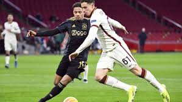

meus projetos

Card title
O futebol é um esporte praticado por duas equipes de 11 jogadores, que se esforçam para marcar mais gols do que o adversário. O jogo é disputado em um campo retangular, com uma baliza em cada lado.

A pescaria é a atividade de capturar ou criar animais aquáticos. Pode ser uma atividade esportiva, econômica ou recreativa
veja o projeto